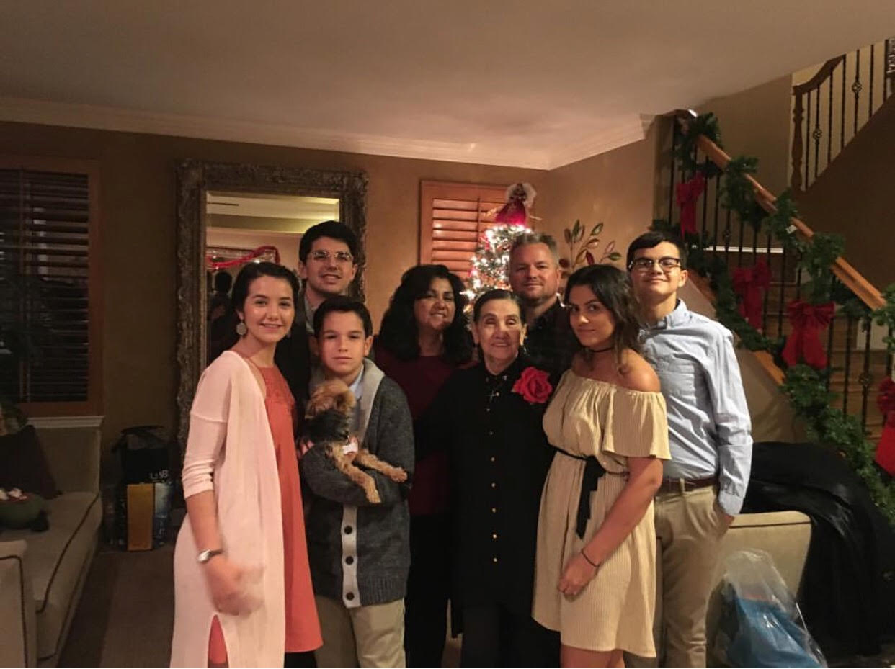
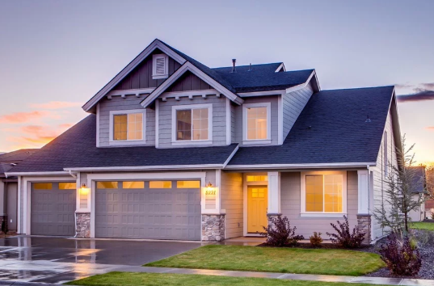

Quick Family Facts
- Families are traditionally made of two parents and 1 to 17 kids, but this definition is very loose and can be stretched
- It is not required to be related by blood to be a part of a family
- In fact, I'd say any person you could depend on for guidance, support, and unconditional love
- The average US family is made up of 3.14 persons
- the fiesta boxes at Del Taco could feed approximately three (3) families
-
- click this link to be given some more family facts!
Family
- My family is composed of eight people: two parents and six children
- I have two sisters and four brothers
- My two sisters and one of my brothers are technically only 'half-siblings'
- My brothers and my name all end in 'ustin'; Justin (older brother), Austin (me), and Dustin (younger brother)
- My other three siblings are much and while I am close to them I do not get to see them often as they all live a reasonable distance away
- My dad is a police officer, not a patrol officer he works for a different branch of CHP
- My mom is a stage manager and I often get to work with her at award shows
- we don't have many traditions but every Christmas Eve the family meets up and we make tamales
- My dad's side of the family owns a farm in minnesota and we try to visit every couple years
- My mom's side lives in Arizona and they often will drive to go to Disneyland or Universal and always visit us on thier way
- The only living grandparent has is my grandma on my mothers side
Familial Pictures

